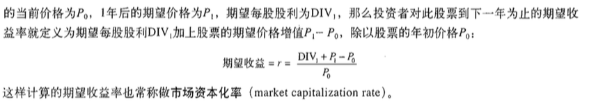

『 读书笔记 』5月读书总结｜博文推荐
2016-05-31
写在前面
计划是每月读 5-10 本书，书籍类型大概是三个方面的：金融，技术，创业。之所以选择这三个方面，一方面是因为自己对这三个方面都很有兴趣，其次是被 linkedin 创始人 Hoffman 的 ABZ 理论 深度影响。建议大家都看看 abz 理论那篇文章，如果我有空，也会整理一些常用的这类理论模型到博客里的。
月底读书总结的形式都很简单，只是简单的一个列表和简单的书评，对觉得比较好的书会有单独的读书笔记。另外推荐大家用 excel 来做一些简单的工作管理，我现在就用 google docs 来做工作安排和读书计划，个人感觉比一些常用的神马协同软件强大太多了，简单，够用，就行了。工作中见过太多人把时间都花到使用那些协同软件上去，不得不说避重就轻了，适得其反，哈哈。
下面是一张我用 google docs 来做本月读书安排的截图，不同颜色代表不同类别的数据，清晰明了实用。

本月原计划安排了 19 本书，实际只看了 10 本书，其中标记为 --- 的是正在看的，没有看完的了，下个月看完了再写上来。其中有电子书版的都放到亲爱的度娘云里了，个人觉得不错的书都是纸板的，不知道有没有电子版的，推荐好书都看纸版的。
ps: 我对好书的定义很简单：
- 给自己有所启发的
- 高质量的，专业的教程类书籍
- 后期会再度回首的书
- 看完后会打算赠送给盆友看的书
- 留着给儿子看的书 [好吧，目前我只有个宝贝侄儿，哈哈]
- 最后一条，印刷质量要好
上月读书总结：『 读书笔记 』4月读书总结｜博文推荐
1. 读书总结
1.1 Docker 全攻略
随着虚拟化技术的流行，最近两年 docker 也开始变得越来越火，我也看好这个趋势的发展，它的 Build, Ship, and Run Any App, Anywhere 的理念很吸引我，这对与初创起来来说是非常可取的一个早期方案［当然后期也可以］。于是准备最近一两个月系统的了解了解 docker 以及它的生态圈，恰逢公司刚刚新购一批书，里面有一本讲docker的书，就拿来看了。总的来说，这本书让我大失所望，通篇80%的内容都是介绍docker的命令用法，参数说明以及一些多余的口舌去了，太过于铺张浪费。通读下来应该感觉都是那种出版社编辑在 qq，微信群里找一些所谓的技术大拿写的［这还是好的，甚至有的出版社编辑直接找大学生写书了；我大三的时候还有一个叫源智天下的出版社找我写单片机的书］。真是不明白为什么有的人会写这种书，说实话，就算是七拼八凑，那性价比也是很低的。一本 500 页的书，顶多能拿个 2～3w 的稿酬，真心没必要。
书籍内容：全书 534 页，其中 28-467 页全是讲 docker 命令，而且都是官方文档
最后问了下公司的 docker 大神，他推荐直接官网 ＋ http://dockone.io/ 这个 docker 社区。
总结：如果你闲得蛋疼的话，来读这本书吧。
推荐指数：NULL
1.2 插播：百度搜索引擎网页质量白皮书
中途插入的，当时要在看 增长黑客 的时候，需要对 SEO 也了解一下，所以就下载了百度的和 google 的 seo 指南，很让我惊奇啊。google 的 seo 指南有满满的140多页，而百度的手册居然连 google 的零头都不到，oh my g~o~d。难以置信，算了，虽然我很想以偏概全，但还是得说百度依然是一个伟大的公司，虽然我从不用它的搜索产品，但其他产品还是挺ok的。
总结：虽然你看了，并且按照百度制定的规范去做了，对你的 seo 可能也没多大用。不过，推荐也看一看。
推荐指数：* * *
1.3 Hadoop权威指南(第3版)(修订版)
之所以要看这本书，是因为最近一直在看一些 spark 的资料，而大多数 spark 应用都把数据存储在 hdfs 上，而且也有同事问过 hadoop 上 datanode 和 namenode 的一些问题，当时我也只能按照自己的理解来回答他。这迫使我相信，要想用好 spark，对 hadoop 以及 hadoop 的生态需要有一定的了解和掌握，这是促使我安排这本书的核心原因。
这本书讲得比较全，推荐大家看中文第三版修订版或者第四版影音版的，因为涵盖了大多成熟的 hadoop 生态里的其他开源项目，能对 hadoop 及其生态有一个比较简单的了解。
总结：第三版修订版或第四版影印版值得阅读，对了解 hadoop 的基本原理，运行流程，使用方法很有帮助，还能了解 hadoop 生态系统里的其他开源项目。
推荐指数：* * * *
1.4 急救手册
很久之前就想看这样一本书，因为现实生活中遇到过这样一件事：在公交车上遇到一个突发癫痫的老人，当时我就离那个老人不远，但老人倒地，发抖，口吐白沫的时候我突然觉得好像周围都静止了，整个人都惊呆了，因为自己完全不知道该怎么办，好像这种事情就永远不会发生在自己身边一样。现在工作了，思想渐渐成熟，满满发现这些学校里面不会传授的知识在生活中的重要性，于是特地选了这本书来学习急救技能。
就本书来说，内容对我这种门外汗来说完全够用了，书籍本身印刷质量非常高，铜纸版印刷的，有很多详细的彩色插图介绍，很值得。
总结：虽然不想承认，但现在人们的健康情况却是越来越差了，掌握一些基础的急救技能真的很有必要，不仅是为了路人，更是为了家人。
推荐指数：* * * * *
1.5 增长黑客
这本书是从公司图书馆借来看的，看完后感觉很有收获，准备在亚马逊上买本回来。这本书讲得挺细致，虽然说并没有特别多的概念，但里面提到了很多实际例子，很有学习和借鉴价值。看完这本书，至少能对增长有一个简单的认识，知道如果自己准备去做一个应用，产品的增长的时候，该从什么方面入手，怎么去制定策略，以及自己还要补充哪些方面的知识才能做一个更好的增长官。不过增长这个概念在国内兴起没有多久，也是伴随大数据兴起的一个产物吧，所以国内对这方面还没有比较系统的介绍，因此，《增长黑客》这本书算是国内对增长这个正在兴起的空白领域一个比较不错的开端吧，相信之后会有更多更好更系统的资料问世。
总结：内容不错，例子充足，对有意创业，或对增长，用户研究，市场营销推广有兴趣的人很有学习和借鉴价值。
推荐指数：* * * * *
1.6 公司财务原理（第十版），第三，四章
第三章，第四章是说债券，股票估值的，讲得一如既往的好。我一般都是先看原版，然后再看第八版的中译本，看看有什么漏掉的地方。第八版是把这两章合并到一章讲的，内容简单很多，还是推荐看第十版原版，讲得详细很多。
但是这次有个问题，其中第四章提到的 市场资本化率 这个概念，名字好奇葩啊，难以理解，直接叫 预期到期收益率 就好理解多了呀。我第一眼看到 市场资本化率 总是容易理解成 流动股本与总股本比率[其他股本不流通，或者被国家持有类似的]，oh，先不管了，继续接着看，没准儿哪天就能理解了呢。

总结：再次说明，公司财务原理 和 估值的艺术 是我看过的觉得超级不错的讲公司财务的书，而且我觉得不仅仅是讲公司财务，还能理解一些公司运转，公司决策这些思想和原理，强烈推荐，值得认真研读。关于 估值的艺术，可以看我三月的读书笔记，在这里 『 读书笔记 』3月读书总结和推荐
推荐指数：* * * * *
1.7 Growth 全栈增长工程师指南
本着在 github 上拿下 3k+ 的星的巨大期待来读这本书的，但不得不说让我有点失望了。看目录思路似乎还挺清晰的，但内容上读下来有一种稍显混乱的感觉。标题也有点噱头，不知道是着重讲 growth，还是着重讲全栈工程师。估计作者是想把两者都讲完吧，但两者都讲完，要讲好是需要很深的内功和对行业的深度了解的。不过还是很感谢作者，能够总结一些做前端，后台开发，以及做 growth 的一些经验吧。
总结：如果你初入职场，对全栈工程师，growth 增长完全不了解，并且有兴趣的话，可以花2-3天时间看完这本书。
推荐指数：* *
1.8 MongoDB权威指南（第2版）.pdf
MongoDB权威指南这本书目前出到第二版了，但是第二版只有英文版的。第一版［中文版］是 2011 年写的，应该是基于 1.5 版的 mongodb。第二版目前只有英文版的，2013年出的，内容比较新，是基于 2.4 版的 mongodb。两者都不新了，现在［2016.05］，mongo都到3.2了，我们生产里用的也是 3.2 的mongodb。不过这两本书本来来说内容还是比较不错的，我第一次接触 mongo 的时候就是看的第一版中文版入门的，内容简单，200页不到；第二版英文版内容有 400 多页，相比第一版内容要丰富得多。推荐看第二版的，然后有空可以去官网看看 release log，看看新版的一些改进和变化。
总结：就书本内容来说，两本都挺不错的。如果之前接触过 mongodb，推荐直接看第二版英文版的；如果之前没接触过 mongodb，推荐直接看第一版中文版的。
推荐指数：* * * * *
1.9 区块链——新经济蓝图
oh, my gosh. 我能说我还是不明白为什么区块链这么火吗？看了这本书，我知道区块链是什么，比特币是什么，但是真的不敢相信难道这真的会是 the future of finance or other things. 没想懂，分布式的交易账户簿，那我想问这跟复杂的分布式存储有什么关系吗？而且交易的数据量这么大，每个节点都存放完整的记录的话，这需要多大的存储空间啊？比特币，现在确实真的好火，但是这种不被国际政府承认的货币，真的能长久吗？为什么我却觉得比特币有一点郁金香的味道呢？
oh, my gosh.
总结：oh, my gosh。这本书真不知道咋个写推荐指数了，oh, my gosh.
1.10 研报系列：宏观择时
推荐指数：* * * * *
2. 博文推荐
这篇文章是真的不错。
- 日请求量过亿，谈陌陌的Feed服务优化之路
- 支付宝架构师：从工程师到架构师的成长之路
- 向Spark开炮：1.6版本问题总结与趟坑
- 你应该知道的HTTP基础知识
- 博客推荐系统——物料准备 (第一部分)
- 博客推荐系统: 基于内容相似性的推荐 ( 第二部分)
这两篇文章写得简单易懂，可以帮助新手了解一个简单的推荐系统的结构。
- 小公司的前端应该怎么做？
- 独立开发者必知的一些总结
- 面试官如何面试程序员
- Spark性能优化指南——基础篇
- Spark性能优化指南——高级篇
- 如何在72小时之内快速搞懂一个陌生行业？
- 数据化解析Term Sheet十大核心条款，关于融资的干货都在这儿了
- 优秀配色方案的探索过程
- 知乎上的48条神回复，针针见血，看完整个人都通透多了
哈哈，轻松一下
- 怎样花两年时间去面试一个人
- 可视化数据采集器import.io与集搜客评测对比
- 如何快速在一个陌生领域达到优秀水平
- “早知道这些我的公司就不会死”系列（一）：CAC、LTV、PBP
- “早知道这些我的公司就不会死”系列（二）：Cohort Analysis
- 【重磅长文】技术和科学是不同的源流，一万字读懂人类技术史
- 纯干货！面试官如何面试程序员
- 纯干货！程序员面试的技巧
- 160篇精选干货内容精编20160523 私募工场
里面的文章都是经典好文啊。